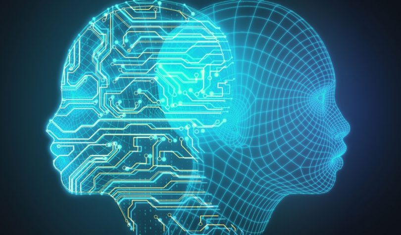

The most basic types of AI systems are purely reactive, and have the ability neither to form memories nor to use past experiences to inform current decisions. Deep Blue, IBM’s chess-playing supercomputer, which beat international grandmaster Garry Kasparov in the late 1990s, is the perfect example of this type of machine. This type of intelligence involves the computer perceiving the world directly and acting on what it sees. It doesn’t rely on an internal concept of the world. In a seminal paper, AI researcher Rodney Brooks argued that we should only build machines like this. His main reason was that people are not very good at programming accurate simulated worlds for computers to use, what is called in AI scholarship a “representation” of the world.
This Type II class contains machines can look into the past. Self-driving cars do some of this already. For example, they observe other cars’ speed and direction. That can’t be done in a just one moment, but rather requires identifying specific objects and monitoring them over time. These observations are added to the self-driving cars’ preprogrammed representations of the world, which also include lane markings, traffic lights and other important elements, like curves in the road. They’re included when the car decides when to change lanes, to avoid cutting off another driver or being hit by a nearby car.
We might stop here, and call this point the important divide between the machines we have and the machines we will build in the future. However, it is better to be more specific to discuss the types of representations machines need to form, and what they need to be about. If AI systems are indeed ever to walk among us, they’ll have to be able to understand that each of us has thoughts and feelings and expectations for how we’ll be treated. And they’ll have to adjust their behavior accordingly
The final step of AI development is to build systems that can form representations about themselves. Ultimately, we AI researchers will have to not only understand consciousness, but build machines that have it. While we are probably far from creating machines that are self-aware, we should focus our efforts toward understanding memory, learning and the ability to base decisions on past experiences. This is an important step to understand human intelligence on its own. And it is crucial if we want to design or evolve machines that are more than exceptional at classifying what they see in front of them.
